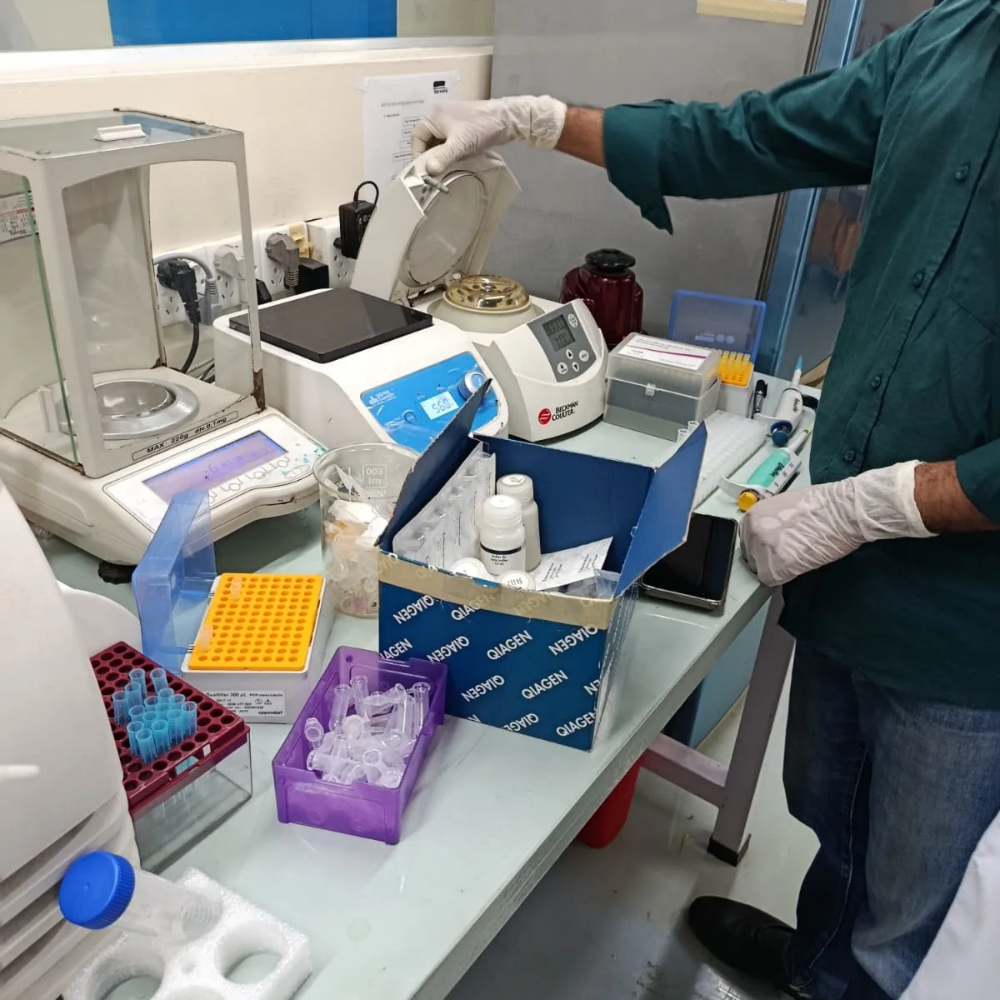

Biochemistry
Biochemical Alterations in Lumpy Skin Disease Affected Cattle of Mymensingh District
Comparative biochemical investigation involving LSD-affected cattle and healthy controls.
Explore work ↗DVM · Bangladesh Agricultural University
I am Md. Foysal, a Doctor of Veterinary Medicine graduate focused on infectious disease epidemiology, antimicrobial resistance, food safety and the One Health approach.


Selected work
Original research poster imagery and project documentation from the source portfolio.
Comparative biochemical investigation involving LSD-affected cattle and healthy controls.
Explore work ↗
Investigates foot-and-mouth disease epidemiology and related losses among cattle in two Bangladeshi districts.
Explore work ↗NodeMCU-based irrigation system with DHT11 and soil moisture sensing, relay-controlled pump and Blynk monitoring.
Explore work ↗Research direction
My interests connect zoonotic disease control, antimicrobial resistance, diagnostic technologies and the health of food systems.
Read my academic goals ↗Disease surveillance, clinical epidemiology and prevention.
Microbiology, stewardship and public health.
ELISA, PCR, culture and biosafety.
Climate-resilient food systems and One Health.